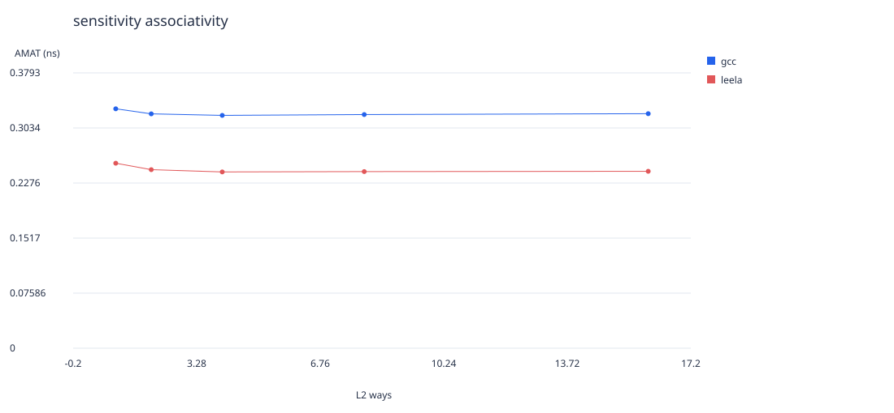
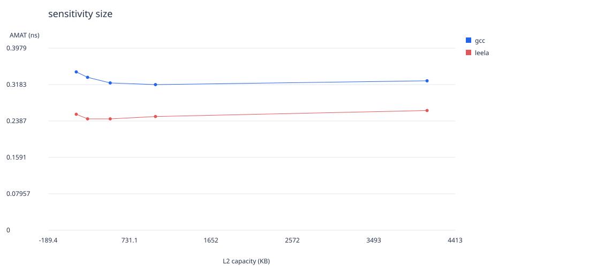
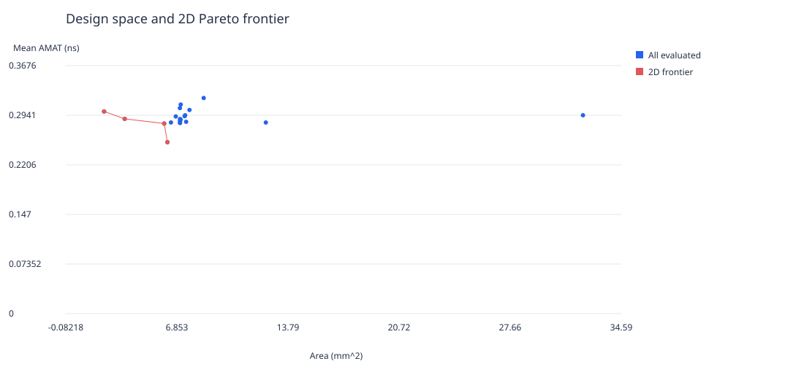
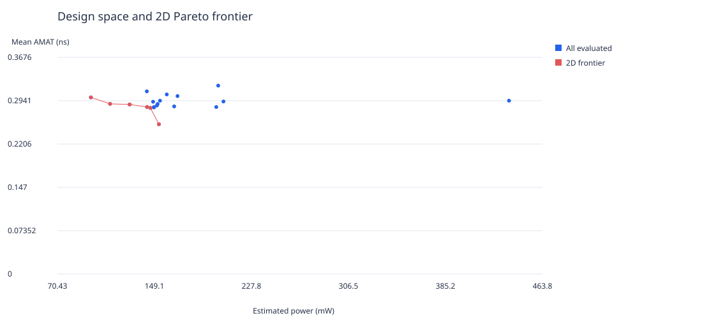
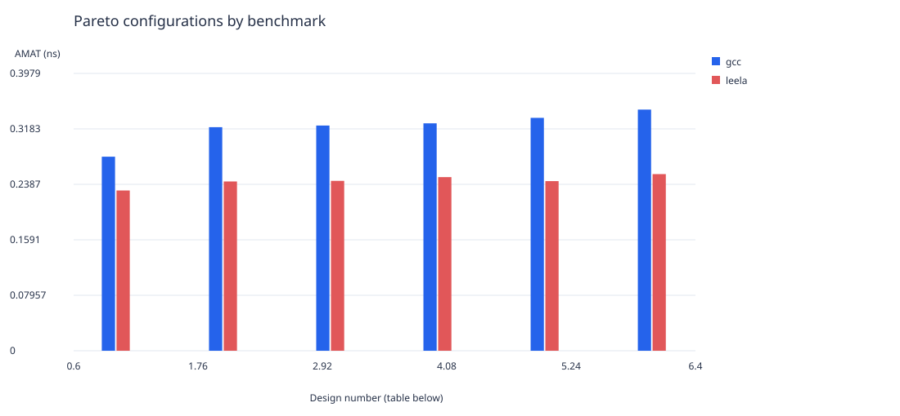

Lab 2: collected results and analysis
Input size: test. 20 evaluated configurations; 40 benchmark summaries; 6 points on the three-objective Pareto frontier. All configured input commands were run. Explicit commands must cover the required workloads; the runner does not verify their completeness. These are architectural experiments, not official SPEC scores.
Selected hierarchy
L1: 8K-64B-4way-lru; L2: 512K-128B-8way-lru. Equal-weight mean gcc/leela AMAT: 0.25416 ns. Area: 6.2631 mm². Estimated total power: 152.72 mW. The winner is the best measured design in the bounded staged search; this does not establish a global optimum.
Method and model assumptions
- Task 4 only: single-level Tasks 1 and 2 were not collected.
- Compact search: 20 distinct hierarchies. Eight L1 geometries with a fixed 512 KB / 64 B / 8-way LRU L2; choose the best L1, compare three additional matched replacement-policy pairs and a 128 B L2 block size. Vary L2 size and associativity around the selected LRU anchor with other parameters fixed. This limited search does not establish a global optimum.
- Destiny models 2D SRAM at 65 nm, 350 K, LOP, normal access, optimized for read latency. Every configuration and raw output is retained under destiny/. Read/write latency, hit/miss/write energy, area, and leakage are in hardware.csv.
- AMAT uses the handout formula with separate hit/miss latencies and 9.5 ns DRAM latency. Times are in ns, never mixed with CPU cycles. Hardware CSV also shows L1 latency at an explicit illustrative 2 GHz CPU clock.
- Demand-only, cold-start data-cache model: both loads and stores allocate on a miss; L1 misses fetch through L2; no inclusion constraint, dirty eviction traffic, coherence, prefetching, instruction cache, or memory-level parallelism. Stores do not propagate to L2 on hits. AMAT follows the handout demand-access convention; it is not full processor runtime.
- Energy includes lookup and one fill write per miss; it excludes writebacks, DRAM energy, and replacement-controller energy. Dynamic power is an estimate at 1e+09 offered L1 accesses/s, not a measured machine power. Leakage is added separately. Compare energy per access as well as power; these assumptions limit physical-power conclusions.
- 5 MiB budget applies to cache data capacity. Analytical metadata overhead assumes 64-bit addresses and includes tags, valid bits, and replacement bits separately. Destiny includes its own tag-array model in area; controller overhead is not modeled.
- ASLR disabled: True. Fixed PRNG seed and single OpenMP thread. When ASLR is unavailable, policy differences may include address-layout noise. Completion requires zero process exit status and consistent counters; SPEC output correctness comparisons are not performed by this runner.
Implementability evidence
L1: read-hit latency 0.2061 ns (0.4122 cycles at 2 GHz), write latency 0.127 ns, read-hit/write energy 0.06665/0.06131 nJ, leakage 1.504 mW. Destiny tag area is 27.84% of cache area; estimated logical metadata/data ratio 10.94%.
L2: read-hit latency 0.4548 ns (0.9096 cycles at 2 GHz), write latency 0.2201 ns, read-hit/write energy 0.8058/0.7836 nJ, leakage 57.81 mW. Destiny tag area is 12.84% of cache area; estimated logical metadata/data ratio 5.08%.
Pareto configurations shown in the bar chart
| # | L1 | L2 | Mean AMAT (ns) |
|---|
| 1 | 8K-64B-4way-lru | 512K-128B-8way-lru | 0.25416 |
| 2 | 8K-64B-4way-lru | 512K-64B-4way-lru | 0.28179 |
| 3 | 8K-64B-4way-lru | 512K-64B-16way-lru | 0.2834 |
| 4 | 8K-32B-4way-lru | 512K-64B-8way-lru | 0.28767 |
| 5 | 8K-64B-4way-lru | 256K-64B-8way-lru | 0.28874 |
| 6 | 8K-64B-4way-lru | 128K-64B-8way-lru | 0.29968 |
sensitivity associativity

sensitivity size

Design space and 2D Pareto frontier

Design space and 2D Pareto frontier

Pareto configurations by benchmark

Files and final writeup
measurements.csv contains per-benchmark counters; When Tasks 1 and 2 are enabled, part1/ and part2/ contain their measurements, hardware tables, run indexes, and plots. part4/ contains the two-level measurements, design_space.csv, pareto.csv, recommended.json, and sensitivity/Pareto plots. All figures are in the respective part's plots/ subfolder. Each part's runs.csv points to shared raw runs using paths relative to that part folder. hardware.csv contains all Destiny metrics; manifest.json records provenance. Use these results in your final PDF and discuss the modeling limitations, power budget, and latency target. This generated report is a reviewable analysis draft.
Tool references: Destiny author mirror; SPEC utilities.